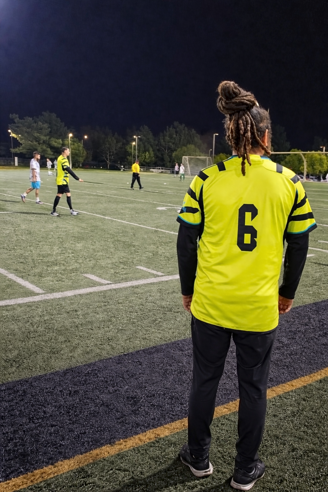

Club Juvenil de Fútbol en Fontana, CA
Desarrollando jugadores mediante disciplina, trabajo en equipo y pasión.
Nuestra Misión
Fontana Fire FC está dedicado a crear una experiencia de fútbol segura, positiva y competitiva que ayude a los jóvenes atletas a crecer en confianza, trabajo en equipo y liderazgo, mientras se fortalecen las conexiones dentro de nuestra comunidad.
Temporada 2026
Jugadores nacidos entre 2012–2018 · Equipos mixtos
Práctica: Lunes y Miércoles · 6:00 PM – 8:00 PM
Central Park · 8380 Cypress Ave, Fontana, CA 92335
Contáctanos para unirteConoce al Entrenador

Alfredo Gaspar
Entrenador Principal · Fontana Fire FC
Soy Alfredo Gaspar, Entrenador Principal de Fontana Fire FC en Fontana, California. El fútbol ha sido parte de mi vida desde los tres años, y he pasado los últimos cuatro años entrenando a jóvenes atletas.
Trabajo con niños y niñas de 6 a 12 años, enfocándome en desarrollar confianza, habilidades y amor por el juego. Mi meta es motivar a cada jugador mientras creo un ambiente de equipo positivo y de apoyo donde los niños puedan crecer tanto como atletas como personas. Estoy comprometido a desarrollar Fontana Fire FC como un equipo competitivo dentro de la SoCal Soccer League mientras ayudo a cada jugador a alcanzar su máximo potencial.